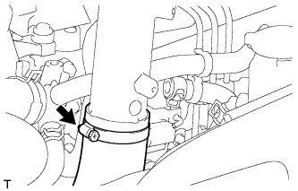
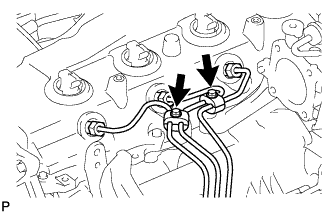
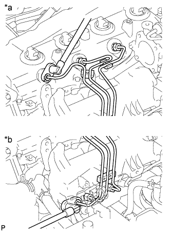
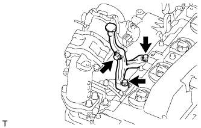
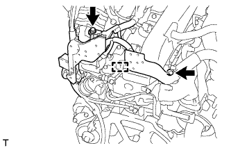
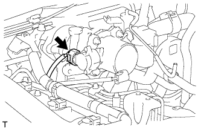
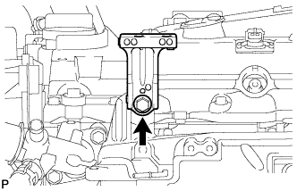
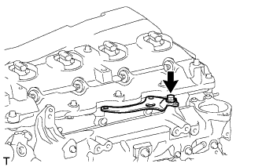

СВЕЧА НАКАЛИВАНИЯ (для моделей без DPF) > СНЯТИЕ |
| 1. ОТСОЕДИНИТЕ ПРОВОД ОТ ОТРИЦАТЕЛЬНОГО ВЫВОДА АККУМУЛЯТОРНОЙ БАТАРЕИ |
| 2. СНИМИТЕ ЭЛЕКТРИЧЕСКИЙ КЛАПАН УПРАВЛЕНИЯ РОГ В СБОРЕ (для моделей с системой РОГ) |
Снимите электрический клапан управления РОГ (Нажмите здесь).
| 3. ОТСОЕДИНИТЕ ВХОДНОЙ ПАТРУБОК ОТОПИТЕЛЯ (для моделей без системы РОГ) |
 |
Выверните болт и отсоедините входной патрубок отопителя.
| 4. ОТСОЕДИНИТЕ ВАКУУМНУЮ ТРУБКУ № 4 В СБОРЕ (для моделей без системы РОГ) |
 |
Выверните болт и отсоедините вакуумную трубку № 4.
| 5. СНИМИТЕ ВПУСКНОЙ ПАТРУБОК № 1 (для моделей без системы РОГ) |
 |
Отсоедините 3 разъема от датчика температуры воздуха на впуске, электродвигателя привода дроссельной заслонки и датчика абсолютного давления в коллекторе.
Снимите 2 зажима.
Отсоедините вакуумный шланг от датчика абсолютного давления в коллекторе.
 |
Ослабьте 2 зажима шланга и снимите воздушный шланг № 1.
|  |
Ослабьте зажим воздушного шланга промежуточного охладителя.
 |
Выверните 2 болта и снимите впускной патрубок № 1.
| 6. СНИМИТЕ КРОНШТЕЙН КОРПУСА ДРОССЕЛЬНОЙ ЗАСЛОНКИ (для моделей без системы РОГ) |
 |
Отсоедините вакуумный шланг.
Выверните болт и снимите газовый фильтр с кронштейном газового фильтра.
Выверните 2 болта и снимите кронштейн корпуса дроссельной заслонки.
| 7. СНИМИТЕ ТОПЛИВНЫЕ ТРУБКИ ВЫСОКОГО ДАВЛЕНИЯ № 1, № 2 И № 3 В СБОРЕ (для моделей без системы РОГ) |
 |
Отверните 2 гайки и снимите зажим топливной трубки высокого давления № 3.
|  |
Выверните 2 болта и снимите 2 зажима топливной трубки высокого давления № 2.
|  |
С помощью разрезной головки на 17 мм ослабьте гайки штуцеров и снимите топливные трубки высокого давления № 1, № 2 и № 3.
| *a | Со стороны форсунки |
| *b | Со стороны топливной системы Common Rail |
| 8. СНИМИТЕ ОПОРУ ПАТРУБКА ПОДАЧИ ВОЗДУХА (для моделей без системы РОГ) |
|  |
Выверните 3 болта и снимите опору патрубка подачи воздуха.
| 9. ОТСОЕДИНИТЕ ЖГУТ ЭЛЕКТРОПРОВОДКИ ДВИГАТЕЛЯ (для моделей без системы РОГ) |
|  |
Для моделей с левосторонним рулевым управлением:
Выверните 2 болта и отсоедините зажим и жгут электропроводки двигателя.
 |
Для моделей с правосторонним рулевым управлением:
Выверните болт и отсоедините жгут электропроводки двигателя.
| 10. СНИМИТЕ ПАТРУБОК ПОДАЧИ ВОЗДУХА С КОРПУСОМ ДРОССЕЛЬНОЙ ЗАСЛОНКИ ДИЗЕЛЬНОГО ДВИГАТЕЛЯ В СБОРЕ (для моделей без системы РОГ) |
|  |
Отсоедините разъем датчика положения дроссельной заслонки.
 |
Выверните 3 болта и снимите патрубок подачи воздуха с дроссельной заслонкой дизельного двигателя и прокладку.
| 11. СНИМИТЕ ОПОРУ ВПУСКНОГО ПАТРУБКА |
|  |
Выверните болт и снимите опору впускного трубопровода.
| 12. СНИМИТЕ ОПОРУ КОЛЛЕКТОРА № 2 |
|  |
Выверните болт и снимите опору коллектора № 2.
| 13. СНИМИТЕ РАЗЪЕМ СВЕЧИ НАКАЛИВАНИЯ № 1 |
Снимите уплотнительную шайбу винта, отверните гайку и отсоедините жгут проводов от разъема свечи накаливания № 1.
Отверните 4 гайки и снимите 4 уплотнительных шайбы винтов и разъем свечи накаливания № 1.
| 14. СНИМИТЕ ИЗОЛЯТОР ВПУСКНОГО КОЛЛЕКТОРА № 1 |
| 15. СНИМИТЕ СВЕЧУ НАКАЛИВАНИЯ |
 |
Снимите 4 свечи накаливания.